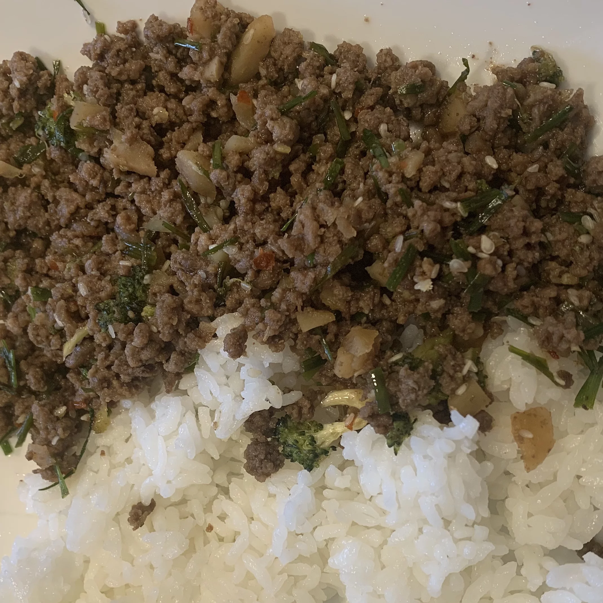

Korean Beef Bow
Pictures

This is the picture while finished

While making this dish, it would be looked like this.
Ingredients
- 1 pound lean ground beef
- 5 cloves garlic, crushed
- 1 tablespoon freshly grated ginger
- 2 teaspoons toasted sesame oil
- ½ cup reduced-sodium soy sauce
- ⅓ cup light brown sugar
- ¼ teaspoon crushed red pepper
- 6 green onions, chopped, divided
- 4 cups hot cooked brown rice
- 1 tablespoon toasted sesame seeds
Steps Instructions
- Heat a large skillet over medium-high heat. Add beef and cook, stirring and crumbling into small pieces until browned, 5 to 7 minutes. Drain excess grease.
- Add garlic, ginger, and sesame oil, stirring until fragrant, about 2 minutes. Stir in soy sauce, brown sugar, and red pepper. Cook until some of the sauce absorbs into the beef, about 7 minutes. Add 1/2 of the chopped green onions.
- Serve beef over hot cooked rice; garnished with sesame seeds and remaining green onions.